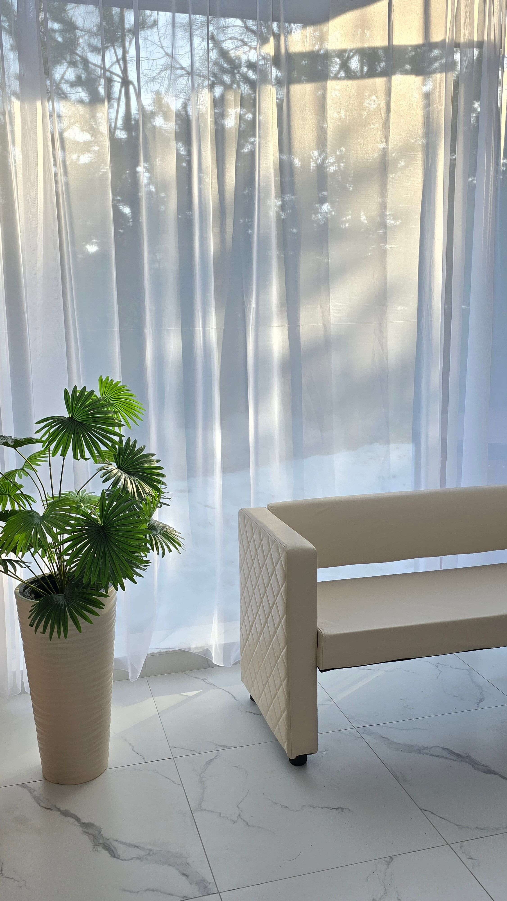

En este artículo
Elige plantas adecuadas
La elección de las plantas es uno de los factores que más puede influir en el mantenimiento futuro del jardín. No todas las especies tienen las mismas necesidades de agua, luz, fertilización o poda. Elegir plantas únicamente por su apariencia puede producir un jardín atractivo al principio, pero difícil de mantener cuando las condiciones del espacio no coinciden con sus necesidades.
Antes de plantar, observa las características reales del jardín. Comprueba cuántas horas de sol recibe cada zona, cómo se comporta el suelo después de la lluvia y qué espacios están más expuestos al viento. También es importante considerar el tamaño que pueden alcanzar las plantas cuando maduren.
Una planta que parece pequeña en un vivero puede necesitar mucho más espacio con el paso de los años. Si se coloca demasiado cerca de otras especies, puede ser necesario podarla constantemente para evitar que invada caminos, ventanas o zonas de paso.
Prioriza especies adaptadas al entorno
Las plantas adaptadas a las condiciones del lugar suelen requerir menos intervenciones que aquellas que necesitan condiciones muy específicas para desarrollarse correctamente. Esto no significa que exista una lista universal de plantas de bajo mantenimiento, ya que las necesidades pueden cambiar según el clima, el suelo y la ubicación concreta.
Por eso, antes de comprar nuevas especies, conviene informarse sobre sus necesidades de agua, exposición solar, crecimiento y resistencia. Una selección coherente desde el principio puede reducir considerablemente el trabajo posterior.
Agrupa plantas con necesidades similares
Otra estrategia sencilla consiste en agrupar plantas que necesiten condiciones parecidas. De esta manera, resulta más fácil organizar el riego y observar el estado de cada zona.
Por ejemplo, colocar juntas plantas que necesitan una cantidad similar de agua puede evitar que unas reciban demasiada humedad mientras otras permanecen secas. La organización también puede mejorar el aspecto general del jardín y crear composiciones más equilibradas.
Un jardín de bajo mantenimiento no tiene que ser un jardín vacío. La idea es seleccionar las especies de manera estratégica para que el conjunto sea atractivo sin exigir cuidados innecesarios.
Diseña una distribución sencilla
La distribución del jardín influye tanto en su apariencia como en el tiempo necesario para cuidarlo. Un diseño excesivamente fragmentado, con muchas pequeñas zonas de plantación y diferentes tipos de materiales, puede hacer que las tareas habituales sean más lentas y complicadas.
Una distribución sencilla permite identificar con mayor facilidad dónde están las plantas, por dónde caminar y qué zonas necesitan atención. También facilita el acceso cuando es necesario retirar hojas, revisar el suelo o realizar pequeñas tareas de mantenimiento.
Define claramente las zonas
Antes de plantar, puede ser útil dividir mentalmente el espacio en diferentes áreas. Una zona puede estar destinada a plantas ornamentales, otra a arbustos y otra a una pequeña superficie de césped o de descanso.
No es necesario crear muchas divisiones. En espacios pequeños, incluso dos o tres zonas bien organizadas pueden ser suficientes para conseguir una composición agradable.
Los caminos también deben formar parte de la planificación. Un acceso cómodo permite llegar a las plantas sin pisar el suelo cultivado y reduce la necesidad de mover objetos cada vez que se realiza una tarea.
Aprovecha la forma natural del espacio
Intentar imponer una distribución completamente diferente a la forma original del jardín puede aumentar el trabajo. En muchos casos resulta más práctico observar las características existentes y utilizarlas como punto de partida.
Las paredes, los desniveles, las zonas de sombra y las áreas de mayor exposición solar pueden convertirse en referencias para decidir dónde colocar cada tipo de planta.
La simplicidad también facilita futuras modificaciones. Si una planta no funciona bien en una determinada zona, será más sencillo sustituirla cuando el diseño no esté excesivamente cargado.
Facilita el riego
El riego es una de las tareas más habituales del jardín. Planificar correctamente las zonas de plantación y utilizar métodos adecuados puede facilitar esta tarea y ayudar a utilizar el agua de manera más responsable.
Antes de decidir cómo regar, observa las necesidades de las plantas y la distribución del jardín. Una zona con plantas diferentes puede necesitar una frecuencia de riego distinta a otra.

- Agrupa plantas con necesidades de agua similares.
- Evita desperdiciar agua fuera de las zonas de plantación.
- Revisa periódicamente el estado del suelo.
- Adapta el riego a las condiciones climáticas.
- Comprueba que el agua llegue realmente a las raíces.
- Revisa periódicamente las conexiones y los sistemas de riego.
Evita regar por rutina sin observar el suelo
Regar siempre con la misma frecuencia puede no ser la mejor opción. Las necesidades de agua cambian dependiendo de la temperatura, las lluvias, la exposición solar y el tipo de suelo.
Observar la humedad del suelo antes de regar permite tomar decisiones más ajustadas. Algunas plantas toleran periodos más secos, mientras que otras necesitan una humedad más constante.
También es importante evitar el exceso de agua. Un suelo que permanece constantemente húmedo puede crear condiciones poco adecuadas para determinadas plantas y favorecer problemas en las raíces.
Facilita el acceso al agua
La ubicación de los puntos de agua también debe tenerse en cuenta al diseñar el jardín. Si una manguera debe atravesar varias zonas cada vez que se riegan las plantas, la tarea puede resultar más incómoda.
Cuando sea posible, planificar el acceso al agua desde el principio permite reducir desplazamientos y facilita las tareas habituales. Incluso en jardines pequeños, una organización sencilla puede marcar una diferencia importante.
Cuida el suelo
Un suelo bien preparado puede favorecer el desarrollo de las plantas y facilitar su mantenimiento posterior. Antes de plantar, conviene observar si el terreno drena correctamente, si se compacta con facilidad y si las plantas existentes parecen desarrollarse de forma saludable.
El drenaje es especialmente importante. Cuando el agua permanece acumulada durante demasiado tiempo, determinadas especies pueden tener dificultades para desarrollarse correctamente.
Por otro lado, un suelo que drena demasiado rápido puede necesitar una estrategia diferente para conservar la humedad disponible. La solución dependerá de las características concretas del terreno y de las plantas seleccionadas.
Evita trabajar el suelo sin necesidad
Un jardín de bajo mantenimiento debe buscar un equilibrio entre preparación y simplicidad. No siempre es necesario modificar completamente el terreno para crear una zona verde.
Es preferible comprender primero las características existentes y seleccionar plantas que puedan desarrollarse razonablemente bien en esas condiciones. De esta forma, se reducen las intervenciones necesarias a largo plazo.
También conviene observar las zonas donde se acumula agua después de la lluvia. Estos pequeños detalles pueden proporcionar información útil sobre el comportamiento del terreno y ayudar a decidir qué plantas colocar en cada lugar.
Utiliza acolchado para reducir el mantenimiento
El acolchado puede ser un recurso práctico en determinadas zonas del jardín. Consiste en cubrir la superficie del suelo alrededor de las plantas con un material apropiado, creando una capa que puede ayudar a conservar la humedad y reducir la aparición de algunas malas hierbas.
Dependiendo del diseño y de las condiciones del espacio, pueden utilizarse diferentes materiales. La elección debe considerar las necesidades de las plantas, el aspecto deseado y las condiciones del lugar.
Mantén una capa adecuada
El acolchado no debe colocarse de manera que cubra directamente la base de los tallos o troncos. Mantener una separación razonable ayuda a evitar acumulaciones innecesarias de humedad en esa zona.
También conviene revisar el estado del material periódicamente. Con el tiempo puede desplazarse, descomponerse o perder parte de su función, por lo que puede necesitar una pequeña renovación.
Utilizado correctamente, el acolchado puede reducir algunas tareas de mantenimiento y ayudar a mantener una apariencia más uniforme en las zonas de plantación.
Sin embargo, no sustituye completamente otros cuidados. El jardín seguirá necesitando observación, riego cuando corresponda y retirada de hojas u otros residuos cuando sea necesario.

Planifica la poda y el crecimiento
La poda puede convertirse en una de las tareas más frecuentes cuando se eligen plantas que crecen demasiado para el espacio disponible. Por esta razón, conviene pensar en el tamaño futuro de cada especie antes de plantarla.
Una planta colocada demasiado cerca de una pared, ventana o camino puede necesitar intervenciones frecuentes para mantenerse dentro del espacio disponible. Elegir una ubicación adecuada desde el principio puede reducir considerablemente este problema.
Respeta el espacio de crecimiento
Consulta las características de las plantas antes de incorporarlas al jardín. Ten en cuenta tanto su altura como su anchura y observa si producen nuevos brotes con rapidez.
También es importante evitar plantar demasiadas especies juntas simplemente para conseguir un jardín abundante desde el primer momento. El espacio que parece vacío inicialmente puede llenarse considerablemente con el crecimiento natural de las plantas.
Una distribución ligeramente más abierta puede resultar más fácil de mantener y permitir que cada planta tenga suficiente espacio para desarrollarse.
No podes únicamente por rutina
La poda debe responder a las necesidades concretas de cada planta y a los objetivos del jardín. Cortar constantemente una especie simplemente porque fue colocada en un lugar demasiado pequeño puede convertirse en una tarea innecesaria.
Una planificación adecuada antes de plantar suele ser una estrategia mucho más sencilla que intentar corregir posteriormente una distribución que no funciona.
Reduce la aparición de malas hierbas
Las malas hierbas pueden aparecer incluso en jardines bien cuidados. Sin embargo, una buena organización del suelo y de las zonas de plantación puede facilitar su control.
Mantener las zonas de plantación correctamente cubiertas y evitar dejar grandes superficies de suelo completamente expuestas puede ayudar a reducir algunos espacios donde aparecen plantas no deseadas.
Revisa el jardín con frecuencia
Una revisión rápida y periódica puede ser más sencilla que dejar que las malas hierbas se acumulen durante mucho tiempo. Cuando todavía son pequeñas, normalmente resulta más fácil retirarlas antes de que ocupen una superficie mayor.
No es necesario dedicar horas al jardín cada día. Una rutina breve de observación puede permitir detectar problemas antes de que se conviertan en tareas más grandes.
También conviene identificar qué plantas están creciendo de manera espontánea antes de retirarlas. No todo lo que aparece de forma inesperada tiene necesariamente el mismo impacto, por lo que observar primero ayuda a actuar con mayor criterio.
Organiza las herramientas y las tareas
Un jardín de bajo mantenimiento no depende únicamente de las plantas. La forma de organizar las herramientas y las tareas también puede influir en el tiempo que necesitas para mantenerlo.
Guardar las herramientas básicas en un lugar accesible evita desplazamientos innecesarios. Si cada pequeña tarea requiere buscar herramientas en diferentes lugares de la casa, el mantenimiento puede parecer más complicado de lo que realmente es.
Crea una rutina sencilla
En lugar de esperar a que todas las tareas se acumulen, puedes establecer pequeñas revisiones periódicas. Comprobar el estado de las plantas, retirar hojas, observar el suelo y revisar el riego son actividades que pueden integrarse fácilmente en una rutina.
La frecuencia dependerá del tamaño del jardín, de la estación del año y de las especies que tengas. No todos los jardines necesitan el mismo nivel de atención.
La principal ventaja de una rutina sencilla es que permite detectar pequeños problemas antes de que se conviertan en trabajos mayores. Una planta con signos de estrés, una fuga en el sistema de riego o una zona con exceso de humedad pueden identificarse con una observación periódica.

Reduce las tareas innecesarias
También merece la pena revisar de vez en cuando qué tareas realmente aportan valor al jardín. Algunas actividades pueden haberse convertido en hábitos sin ser necesarias para mantener las plantas saludables o el espacio ordenado.
Un jardín de bajo mantenimiento busca precisamente eliminar parte de ese trabajo innecesario mediante decisiones tomadas desde el principio.
Evita errores frecuentes
Muchos problemas de mantenimiento comienzan antes de que el jardín esté terminado. Una de las decisiones más habituales es elegir plantas únicamente por su aspecto sin considerar sus necesidades reales.
Otro error consiste en plantar demasiadas especies en un espacio pequeño. Aunque el resultado puede parecer abundante al principio, el crecimiento posterior puede generar competencia por el espacio y aumentar la necesidad de poda y reorganización.
También es frecuente crear demasiadas zonas diferentes. Cada tipo de planta, material o superficie puede necesitar cuidados específicos, por lo que un diseño excesivamente variado puede terminar aumentando el trabajo.
No confundas bajo mantenimiento con ausencia de cuidados
Un jardín de bajo mantenimiento no significa un jardín que nunca necesita atención. Todas las plantas requieren algún nivel de cuidado para mantenerse en buenas condiciones.
El objetivo es reducir las tareas innecesarias y conseguir que las actividades inevitables sean más fáciles de organizar. Una buena selección de plantas, una distribución adecuada y una estrategia de riego coherente pueden marcar una diferencia importante.
También es recomendable adaptar las expectativas al tamaño y a las características del jardín. Un espacio pequeño puede mantenerse con una rutina sencilla, mientras que una superficie mayor necesitará una planificación más detallada.
En lugar de buscar un jardín completamente libre de trabajo, resulta más realista diseñar un espacio que pueda mantenerse cómodamente dentro del tiempo que realmente tienes disponible.
Conclusión
Crear un jardín de bajo mantenimiento comienza mucho antes de plantar. La elección de especies, la distribución del espacio, el acceso al agua y las características del suelo pueden determinar cuánto trabajo será necesario realizar posteriormente.
Elegir plantas adecuadas para las condiciones del lugar permite reducir intervenciones innecesarias. Del mismo modo, agrupar especies con necesidades similares facilita el riego y ayuda a mantener una organización más clara.
Una distribución sencilla también puede marcar una diferencia importante. Los caminos deben ser accesibles, las zonas de plantación deben estar bien definidas y cada planta debería disponer del espacio suficiente para desarrollarse sin obligar a realizar podas constantes.
El riego merece una atención especial porque suele representar una parte importante del mantenimiento. Observar el suelo, adaptar la frecuencia a las condiciones climáticas y organizar correctamente las zonas de plantación puede ayudar a utilizar el agua de una manera más eficiente.
Cuidar el suelo y utilizar acolchado cuando sea apropiado puede contribuir a conservar mejor la humedad y reducir algunas tareas, mientras que una planificación correcta del crecimiento ayuda a evitar problemas futuros relacionados con el tamaño de las plantas.
También es importante mantener una rutina realista. No se trata de pasar horas trabajando en el jardín, sino de observarlo con cierta frecuencia y actuar antes de que pequeños problemas se conviertan en tareas mayores.
En definitiva, un jardín de bajo mantenimiento no busca eliminar completamente los cuidados, sino hacerlos más sencillos, organizados y compatibles con la vida cotidiana. Cuando el diseño responde a las características reales del espacio, es posible disfrutar de un jardín agradable sin convertir su mantenimiento en una obligación constante.